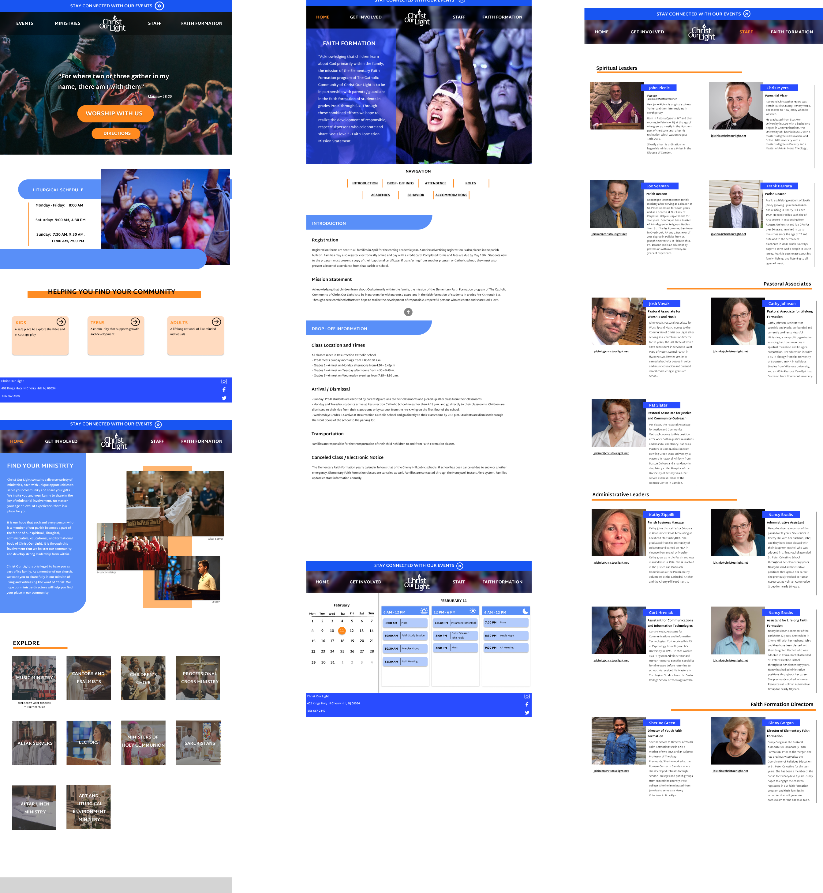

This is a Figma UI redesign that I completed for Christ Our Light Church's website. I completed this for a UI design class.
While completing this design, I had three priorities: visual design, usability, and organization.
In terms of visual design, I madeseveral efforts to improve on the source material. First, I established an effective color scheme. I selected a color combination
of blue and orange because the colors are complimentary. Additionally, I designed sleek looking visual components. For example, the
original design used outdated looking buttons and clip art. I redesigned the buttons to look more modern, and I selecected higher quality Images
I also added a sleek looking hero image to greet the user.
For usability, I made several important design choices. One significant example of usability improvement was my design for the
events page. On the original website, the events were displayed on a tiny window on the home screen. It was visually unapealling and
difficult to use. I created an entire page devoted to displaying the events. My page allows users to select any date and view
each event individually. This made the experience of searching for events much easier.
Finally, in terms of organization, I restrutured the information of the original webpage. On the original site, much of the present
information was not readily available to users. Pages linked to pdfs that users had to download in order to access information.
I designed several pages devoted to displaying this information. My "ministries" is an example of this. Users can navigate this page
by clicking any of the ministry images to view more information. This makes for a much more pleasant user experience than downloading a pdf.